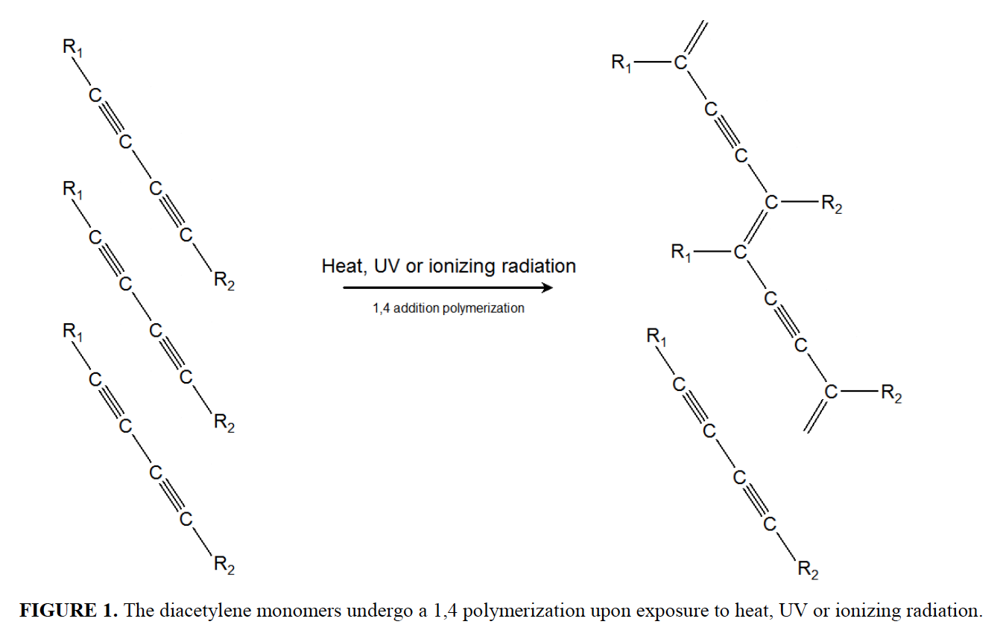

| Background |
Active component:
diacetylene monomers (e.g. Li-PCDA [10,12-pentacosadiynoic acid])
(vs radiographic film: silver halide based) Mechanism:
polymerisation of the diacetylene monomer
→ blue coloured polymer → i.e. absorb red + green

Design:
Advantages:
:) no film processing
:) ↑ resolution, ↑ dynamic range :) ↓ sensitive to visible light > no dark room :) Dose rate independent * store at room temperature or lower * keep relative humidity ↓ OD-Pixel Value relationship
\( OD = log_{10} \Large \frac{2^{16}}{PV} \), for 16-bit scan per channel i.e. 48-bit RGB
NIH Rodbard function for fitting: \( D = c \Large \left( \frac{OD-a}{d-OD}\right) ^\frac{1}{b} \) Factors Affecting Dose Response Curve
|
|||||||||||||||||
| Model |
|
|||||||||||||||||
| Considerations and Remedies |
|
|||||||||||||||||
| AAPM TG-235 |
QA of Scanner
|
|||||||||||||||||
| Lateral Response Artefact (LRA) |
Lewis D, Chan MF. Correcting lateral response artifacts from flatbed scanners for radiochromic film dosimetry. Med Phys. 2015 Jan;42(1):416-29. Correct LRA for each color channel, each dose, and each lateral position |
|||||||||||||||||
| Analysis |
Micke (2011) Multichannel filme dosimetry with non-uniformity correction
Positive image: [0(black), 216(max) ]
PV (ROI mean of raw pixel value) X (channel value = normalised PV) \( X = \Large \frac{PV_{(R/G/B)}}{2^{16}} \)
Equations from other papers:
\[ OD = log_{10} \large \left( \frac{I_0}{I_{exposed}} \right) \]
where
\(I_0\) = mean pixel value of 0 Gy \(I_{exposed}\) = mean pixel value of exposed film Fitting NIH Radford function: \[ Dose = c \left( \frac{OD-a}{d-OD} \right)^{\frac{1}{b}} \] |
|||||||||||||||||
| Basic |
Reflection vs Transmission Scanning
Reflection mode:
light source and detectors are on the same glass side
light emit from bottom > active layer > > active layer > detector ∵ pass through active layer twice → enhance response → ↑ sensitive (at low dose) :( film front surface might reflect some light act as a offset > ↓ dynamic range Lateral Response Artefact
lateral position = perpendicular to scan direction (i.e. along the light source)
|
| Good Practice |
|
| QA | https://www.stouffer.net/Productlist.htm |
|
1. Direct Film
Properties
2. Screen Film |